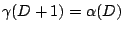
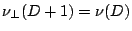
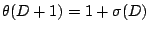
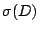
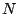
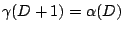
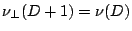
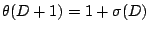
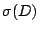
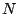

Dimensional reduction occurs when the critical behavior of one system can be related to that of another system in a lower dimension. We show that this occurs for directed branched polymers (DBP) by giving an exact relationship between DBP models in  dimensions and repulsive gases at negative activity in
dimensions and repulsive gases at negative activity in  dimensions. This implies relations between exponents of the two models:
 (the exponent describing the singularity of the pressure), and
 (the correlation length exponent of the repulsive gas). It also leads to the relation
, where  is the Yang-Lee edge exponent. We derive exact expressions for the number of DBP of size  in two dimensions.
dimensions. This implies relations between exponents of the two models:
 (the exponent describing the singularity of the pressure), and
 (the correlation length exponent of the repulsive gas). It also leads to the relation
, where  is the Yang-Lee edge exponent. We derive exact expressions for the number of DBP of size  in two dimensions.
John Imbrie
2003-09-10